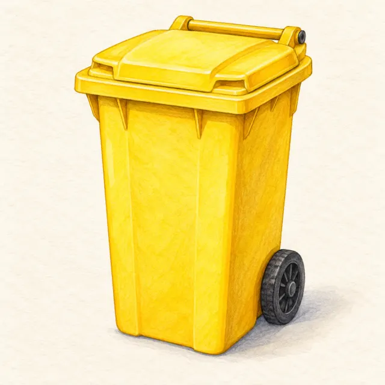
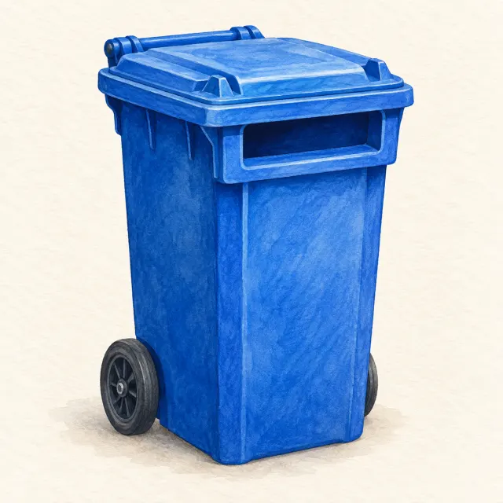
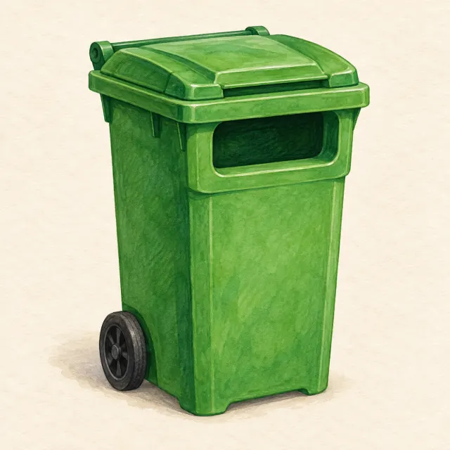
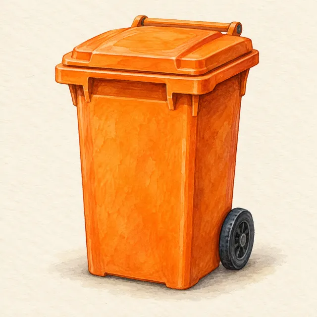
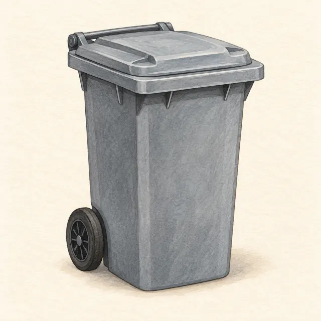
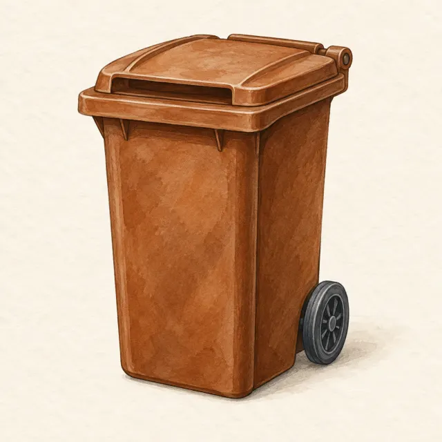

Pro 9. ročník: odpady a recyklace, paliva a emise, ochrana vody a ovzduší.






Barva je pomůcka, ale rozhoduje nálepka na nádobě. Některé obce sbírají kovy či nápojové kartony společně s plasty. Baterie patří do sběrného boxu, léky do lékárny a elektro do místa zpětného odběru.
Nejlepší odpad je ten, který vůbec nevznikne. Pak následuje opětovné použití, recyklace, energetické využití a až nakonec skládka. Nebezpečný odpad (baterie, barvy, léky, zářivky) nikdy nepatří do směsného koše.